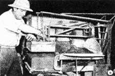

Here's the final step . . . moving blocks to the curing yard on racks especially designed for the purpose. It usually is best to cure blocks in shade. They should not be handled until cured thoroughly.